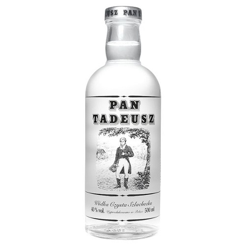

|  |
|
|
Pan Tadeusz, czyli Ostatni zajazd na Litwie – poemat epicki Adama Mickiewicza wydany w dwóch tomach w 1834 w Paryżu przez Aleksandra Jełowickiego. Ta epopeja narodowa z elementami gawędy szlacheckiej powstała w latach 1832–1834 w Paryżu. Składa się z dwunastu ksiąg pisanych wierszem, trzynastozgłoskowym aleksandrynem polskim. Czas akcji: pięć dni z roku 1811 i dwa dni z roku 1812. Epopeja jest stałą pozycją na polskiej liście lektur szkolnych. W 2012 była publicznie odczytywana w akcji społecznej propagującej znajomość literatury polskiej Narodowe Czytanie Pana Tadeusza W 2014 roku rękopis „Pana Tadeusza” został wpisany na Polską Listę Krajową Programu UNESCO Pamięć Świata |
|